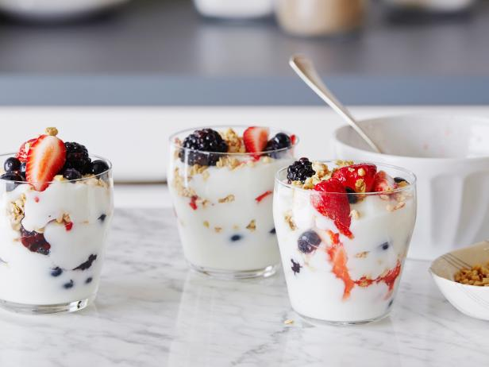

1. Eat a healthy breakfast
If you exercise in the morning, get up early enough to finish breakfast at least one hour before your workout. Be well fueled going into a workout.
Studies suggest that eating or drinking carbohydrates before exercise can help you do better during your workout. And the carbohydrates may allow you to work out for a longer time or at a higher intensity. If you don't eat, you might feel slow-moving or lightheaded when you exercise.
If you plan to exercise within an hour after breakfast, eat a light meal. Or have a sports drink. Focus on carbohydrates for the most energy.
Good breakfast choices include:
- Whole-grain cereals or bread.
- Low-fat milk.
- Juice.
- A banana.
- Yogurt.
And remember, if you usually have coffee in the morning, it's probably OK to have a cup before your workout. Also know that anytime you try a food or drink for the first time before a workout, you risk an upset stomach.
2. Watch the portion size
Be careful not to overdo it when it comes to how much you eat before exercise. General guidelines suggest:
- Large meals. Eat these at least 3 to 4 hours before exercising.
- Small meals or snacks. Eat these about 1 to 3 hours before exercising.
Eating too much before you exercise can leave you feeling slow-moving. Eating too little might not give you the energy you need to keep feeling strong during your workout.
3. Snack well

Most people can eat small snacks right before and during exercise. The key is how you feel. Do what works best for you. Snacks eaten soon before exercise probably won't give you added energy if your workout lasts less than 60 minutes. But they may keep you from feeling hungry.
If your workout is longer than 60 minutes, it may help to have a carbohydrate-rich food or drink during the workout. Good snack choices include:
- An energy bar.
- A banana, an apple or other fresh fruit.
- Yogurt.
- A fruit smoothie.
- A whole-grain bagel or crackers.
- A low-fat granola bar.
- A peanut butter sandwich.
- Sports drink or diluted juice.
A healthy snack is especially important if you plan to work out many hours after a meal.
4. Eat after you exercise
Eat a meal that has both carbohydrates and protein in it within two hours of your workout if possible. Eating after you work out can help muscles recover and replace their glycogen stores. Think about having a snack if your meal is more than two hours away. Good post-workout food choices include:
- Yogurt and fruit.
- Peanut butter sandwich.
- Low-fat chocolate milk and pretzels.
- Post-workout recovery smoothie.
- Turkey on whole-grain bread with vegetables.
5. Drink up
Don't forget to drink fluids. You need to have enough fluids before, during and after exercise to help prevent dehydration.
To stay well hydrated for exercise, the American College of Sports Medicine recommends that you:
- Drink roughly 2 to 3 cups (473 to 710 milliliters) of water during the 2 to 3 hours before your workout.
- Drink about 1/2 to 1 cup (118 to 237 milliliters) of water every 15 to 20 minutes during your workout. Change amounts related to your body size and the weather.
- Drink roughly 2 to 3 cups (473 to 710 milliliters) of water after your workout for every pound (0.5 kilogram) of weight lost during it.
Water is generally the best way to replace lost fluids. But if you're exercising for more than 60 minutes, try a sports drink. Sports drinks can help keep your body's electrolyte balance. And they can give you a bit more energy because they have carbohydrates in them.